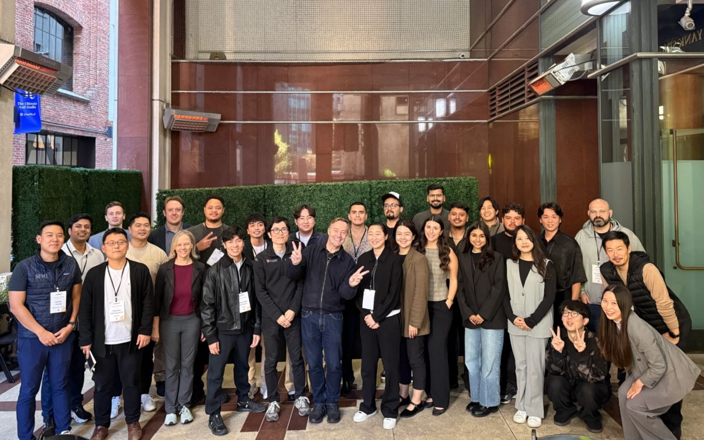

Metis among the top two investor picks at Founder University Japan
Metis、Founder University Japan
US Immersion Weekで投資家の推薦数2位に
Metis was one of the two startups most often named by investors at the US Immersion Week of Founder University Japan, the pre-accelerator run by JETRO and Jason Calacanis's LAUNCH. Six of the nine investors who shared their top picks included Metis, the second-highest count among the 10 startups in the cohort.

The week
US Immersion Week took place October 19–23 in San Francisco. The 10 startups selected from the 12-week program spent a week of back-to-back pitches to US venture investors, along with company visits and workshops.
At the end of the week, LAUNCH shared each investor's top picks. Metis was named by:
- Mikihiro Yasuda, Hike Ventures
- Katelin Holloway, SevenSevenSix
- Jed Katz, Javelin Venture Partners
- Stu Smith, Scribble Ventures
- James Walker, Draper Associates
- Aliya Lakhani, Precursor Ventures
What we heard
Metis is an institutional knowledge platform for engineering design. We capture the reasoning behind design decisions, including the tacit knowledge that lives only in engineers' heads, and deliver it to hardware design engineers just in time, inside and around CAD.
The pitches gave us direct feedback from US investors on the problem we focus on: engineers lose a large share of their time searching for information that is scattered across CAD, shared drives, wikis, email and meetings, and much of it leaves when experienced engineers do.
Thank you to JETRO, the LAUNCH team, and every investor who took the time to hear us out.
Talk to us
Metis is raising a pre-seed round and scoping pilots with automotive OEMs and suppliers. If you lead a hardware design team or invest in industrial AI, get in touch.
Metisは、JETROとJason Calacanis氏率いるLAUNCHが運営するプレアクセラレーター「Founder University Japan」のUS Immersion Weekにおいて、投資家から最も多く推薦された2社のうちの1社となりました。推薦企業を公表した投資家9名のうち6名がMetisを挙げ、参加10社の中で2番目に多い推薦数となりました。
US Immersion Weekについて
US Immersion Weekは10月19日から23日まで、サンフランシスコで開催されました。12週間のプログラムから選ばれた10社が、1週間にわたり米国のベンチャー投資家へのピッチを重ね、企業訪問やワークショップにも参加しました。
プログラム終了後、LAUNCHが各投資家の推薦企業を公表しました。Metisを推薦いただいたのは以下の方々です。
- Mikihiro Yasuda氏（Hike Ventures）
- Katelin Holloway氏（SevenSevenSix）
- Jed Katz氏（Javelin Venture Partners）
- Stu Smith氏（Scribble Ventures）
- James Walker氏（Draper Associates）
- Aliya Lakhani氏（Precursor Ventures）
得られたもの
Metisは、エンジニアリングデザインのための組織知プラットフォームです。設計判断の背景にある理由を、設計者の頭の中にしかない暗黙知も含めて記録し、ハードウェア設計者が必要とするタイミングで、CADの中と周辺で届けます。
今回のピッチを通じて、私たちが取り組む課題について米国の投資家から直接フィードバックを得ることができました。設計者は、CAD、共有ドライブ、Wiki、メール、会議に散らばった情報を探すことに多くの時間を費やしており、その知見の多くはベテラン設計者の退職とともに失われています。
JETRO、LAUNCHの皆さま、そしてお時間をいただいたすべての投資家の皆さまに感謝申し上げます。
お問い合わせ
Metisは現在プレシードラウンドの資金調達を進めるとともに、自動車OEMやサプライヤーとパイロットの検討を進めています。ハードウェア設計チームを率いる方、産業向けAIに投資されている方は、こちらからお問い合わせください。